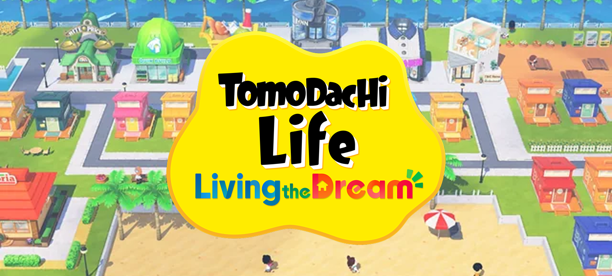
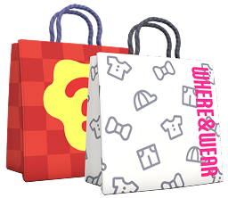

Your Guide to Living the Dream
Welcome to the Island!
The possibilities are endless with your island adventure in Tomodachi Life! In Living the Dream, players create their own island filled with Miis who live, grow, and interact in hilarious and unexpected ways.
<section id="welcome" class="content-section">
<h2>Welcome to the Island!</h2>
<p>Create your dream island adventure.</p>
</section>
Meet the Miis
Your Miis are the stars of your island! In Tomodachi Life, players can create Miis inspired by friends, family, favorite characters, or completely original ideas. Customize their appearance, voice, personality, and style to make each resident feel one of a kind. As they spend time together, Miis will form friendships, share adventures, and create memorable stories of their own.
<img src="../miirun.png"
alt="Running Miis"
class="decorative">
Island Living
There’s always something happening around the island in Tomodachi Life. Miis live in their own homes where they ask for advice, try new foods, and experience everyday living. (Sometimes, they’ll even ask to move in together!) Help solve their problems, decorate their homes, and unlock exciting new oppertunites as your island community continues to grow.
.content-section{max-width:900px;
padding:40px;
scroll-margin-top:100px;}

Shops & Style
A trip to the shops is always full of fun possibilities in Tomodachi Life. Discover new outfits, accessories, room interiors, and tasty foods to share with your Miis. Every item adds more personality to your island and helps make each resident feel special. Be sure to check the shops often, you never know what exciting new styles might appear next!
<ul>
<li>Hat Shop</li>
<li>Import Wear</li>
<li>Interior Store</li>
</ul>
Popular Island Shops
- Where and Wear Store
- Builder Shop
- Interior Shop
- Pawn Shop
- Grocery Store
Dreams & Drama
Life on the island can be sweet, silly, and sometimes a little dramatic in Tomodachi Life. Miis may become best friends, fall in love, or get into funny disagreements along the way. When the sun goes down, players can even peek into their Miis’ strange and hilarious dreams. With so many unexpected moments waiting around every corner, island life is always full of surprises.
.sidebar a:hover{
background:#FCF2CF;
transform:translateX(10px);}